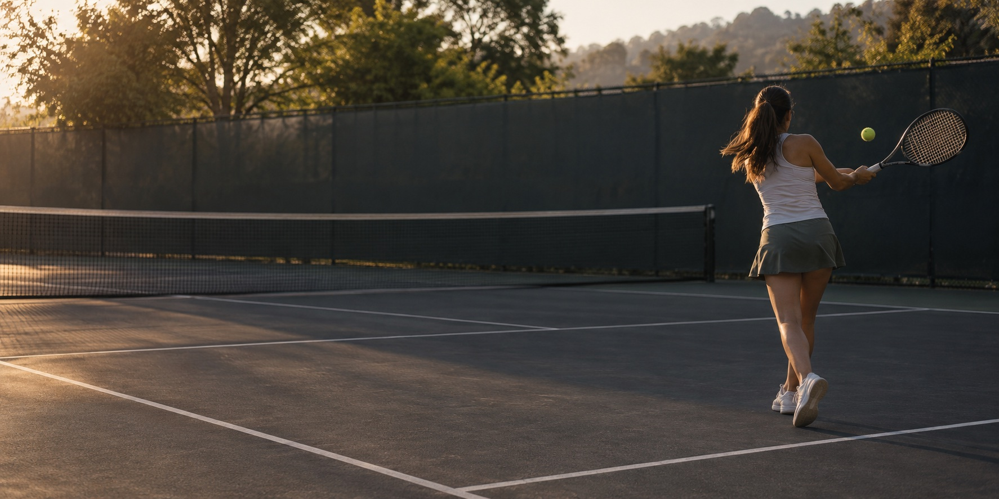
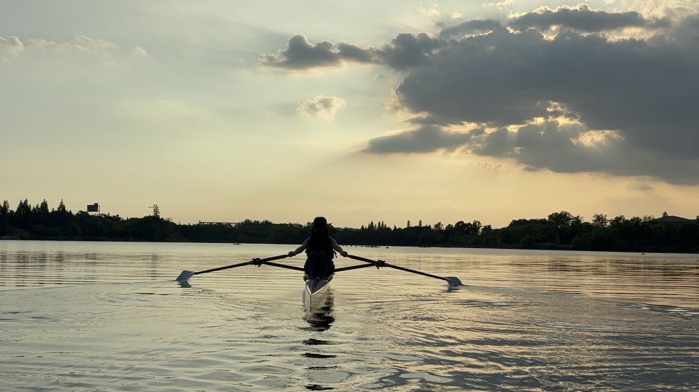
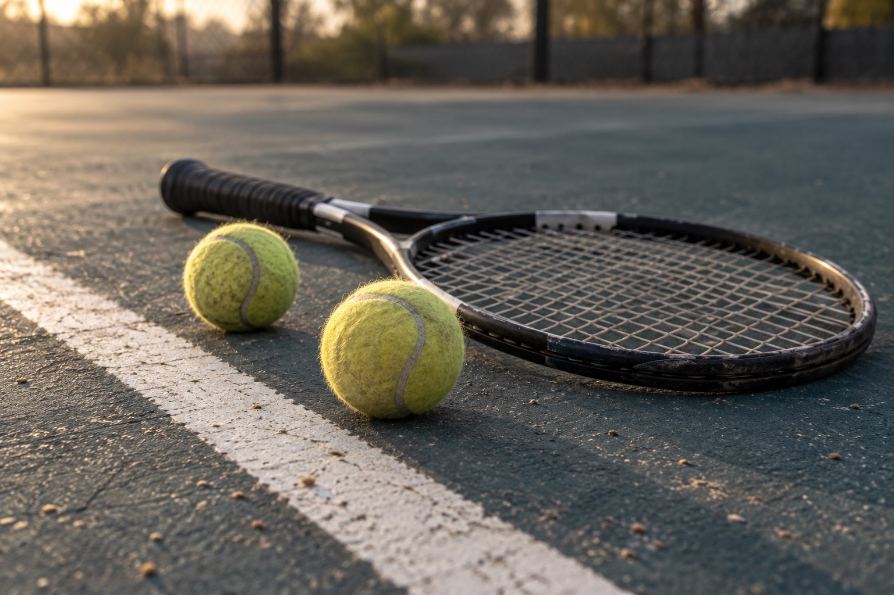
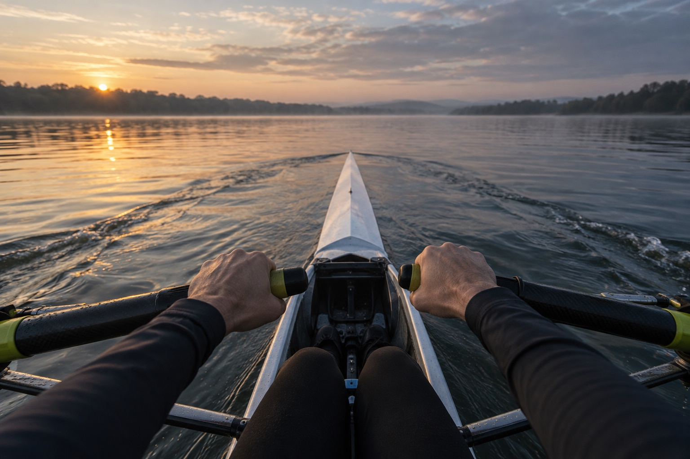

Sport / Tennis & rowing
Still showing
up.
Tennis and rowing give me a reason to practice, reset, and return.
I'm not a professional athlete. I just love the work of getting better.
01 / The court 02 / The water 03 / The practice


01 / On the court
One more rally.
Some days the timing clicks. Some days I start over. I keep returning to the court for both.
Practice looks different every time.

02 / On the water
Find my rhythm.
Rowing makes progress feel quiet: one stroke, then the next. I come back for the rhythm and the work of finding it again.
One stroke. Then the next.03 / The practice
The part that stays.
No dates or finish lines. Just a rhythm I keep choosing.
- 01
Show up
Make space for the practice.
- 02
Find a rhythm
Settle into the movement.
- 03
Begin again
Learn from the off days, too.
- 04
Keep going
Return, one session at a time.
What I love most is